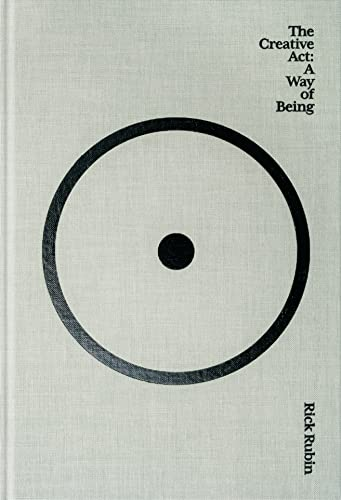

I recently read The Creative Act: A Way of Being by Rick Rubin. While he might be a little insane, he has a wonderful perspective on creativity. Here are some of my favorite quotes from the book.
Often, the most innovative ideas come from those who master the rules to such a degree that they can see past them or from those who never learned them at all
Fear of criticism. Attachment to a commercial result. Competing with past work. Time and resource constraints. The aspiration of wanting to change the world. And any story beyond "I want to make the best thing I can make, whatever it is" are all undermining forces in the quest for greatness.
Do what you can with what you have. Nothing more is needed.
If you feel unable to hit a note or faithfully paint an image, it's helpful to remember that the challenge is not that you can't do it, but that you haven't done it yet. Avoid thinking in impossibilities. If there's a skill or piece of knowledge you need for a particular project, you can do the homework and work toward it over time. You can train for anything.
Great decisions aren't made in a spirit of sacrifice. They're made by the mutual recognition of the best solution available.
"Making the simple complicated is commonplace," Charles Mingus once said. "Making the complicated simple, awesomely simple, that's creativity."